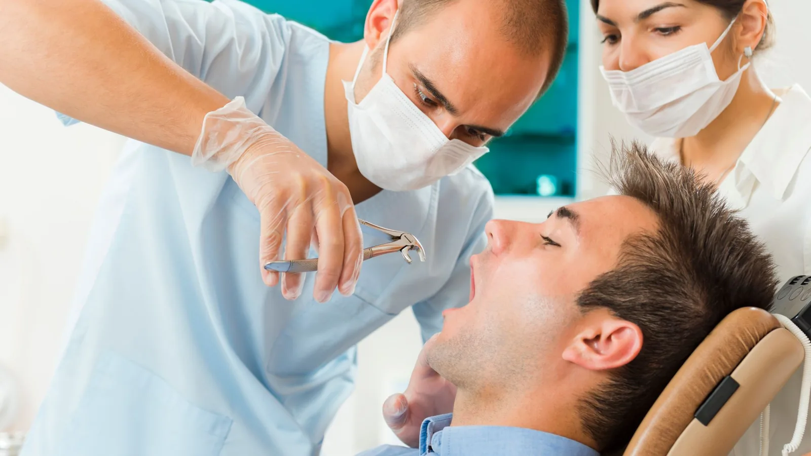

Restorative Dentistry
Taking a tooth out when that is genuinely the right call.
The general principle here is to keep your own teeth where keeping them is realistic. Root canal treatment, crowns and gum therapy exist precisely so that teeth can be saved, and Dr Meg would rather explore those options first.
But some teeth cannot be kept. A tooth split below the gum line, one with decay extending beneath the bone, one with advanced gum disease and little support left, or one causing repeated infection — those are cases where removal is the sensible course, and delaying it usually makes the situation worse rather than better.
Where that is the position, we will explain clearly why the tooth cannot be saved, what the extraction involves, and what your options are for replacing it afterwards.

Simple and surgical extractions
A simple extraction removes a tooth that is fully erupted and accessible. It is done under local anaesthetic, and the sensation is generally one of pressure rather than pain.
A surgical extraction is needed where a tooth has broken at the gum line, has curved or splayed roots, is partly buried in bone, or has not fully erupted. It involves raising the gum, sometimes removing a small amount of bone, and often sectioning the tooth so it can be removed in pieces rather than forced out whole. Sectioning is a gentler approach, not a sign of difficulty.
Dr Meg carries out complicated surgical extractions. Years in regional practice, where oral surgeons were a long drive away, made that a necessary skill. Where a case genuinely warrants an oral and maxillofacial surgeon — proximity to a nerve, significant medical complexity, or anatomy that makes the risk unreasonable in general practice — she will refer you.
[CLIENT TO CONFIRM: whether wisdom tooth removal should be named on this page, and which case types are routinely referred.]
Planning
More involved extractions are planned with imaging first. A standard X-ray shows the roots; where a tooth sits close to a nerve or a sinus, CBCT imaging gives a three-dimensional view of exactly where those structures run. Knowing before you start is what keeps the procedure straightforward.
Tell us about your medical history and any medications, particularly blood thinners and bone medications, since these affect how an extraction is managed.
Afterwards
You will be given written aftercare instructions. In brief: bite firmly on the gauze for the time specified, do not rinse for the first day, avoid smoking and drinking through a straw, keep to soft food and lukewarm drinks for a day or two, and use a cold compress on the outside of the face for the first several hours.
Some soreness and swelling for a few days is expected. Increasing pain three or four days later, particularly a deep ache radiating to the ear, may indicate a dry socket, which we treat easily but need to see you for.
Replacing the tooth
It is worth thinking about replacement before the extraction rather than after. A gap allows neighbouring teeth to tilt and the opposing tooth to over-erupt, which can complicate replacement later. Options include an implant, a bridge or a partial denture, and Dr Meg will discuss what is realistic for your situation and budget.
Frequently asked questions
The procedure is done under local anaesthetic, and most people describe pressure rather than pain. Dr Meg takes her time with the anaesthetic. No dentist can promise a completely pain-free appointment, and there is usually soreness for a few days afterwards.
Most people manage ordinary activity the next day after a simple extraction. Surgical extractions involve more swelling and soreness, generally settling over three to seven days. Full healing of the socket takes several weeks.
After a simple extraction, often yes. After a surgical extraction, it is worth planning a quiet day, and avoiding heavy physical work for a day or two.
Usually, particularly if it is a tooth you chew on or one that shows. Back teeth further along the arch are sometimes left, depending on your bite. It is a decision worth making early.
Tell us before the appointment. Most extractions can proceed safely with appropriate management, but it needs planning and may involve contacting your doctor.
Loss of the blood clot from the socket, exposing bone. It typically appears three to four days after the extraction as a deep, worsening ache. It is uncomfortable but readily treated — phone us and we will see you.